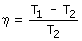

Máquinas térmicas Una máquina térmica es un dispositivo que convierte calor en trabajo. La máquina utiliza un gas que recorre un ciclo en una parte del cual toma calor y en otras lo cede cede. La diferencia entre el calor tomado y el cedido se convierte en trabajo: η se denomina rendimiento del ciclo (Siempre es menor que 1) Multiplicando el trabajo producido en un ciclo por el número de ciclos que realiza la máquina en un segundo se obtiene el traba-jo producido por segundo (Potencia) Máquina de Carnot Es una máquina ideal cuyo gas de trabajo recorre un ciclo en cuatro etapas: expansión isoterma a temperatura T1, expansión adiabática hasta la temperatura T2, compresión isoterma y com-presión adiabática hasta el estado de partida Si los procesos son reversibles el rendimiento de la máquina vie-ne dado por:  El rendimiento de la máquina de Carnot es el máximo posible pa-ra cualquier máquina que trabaje entre las mismas temperaturas |